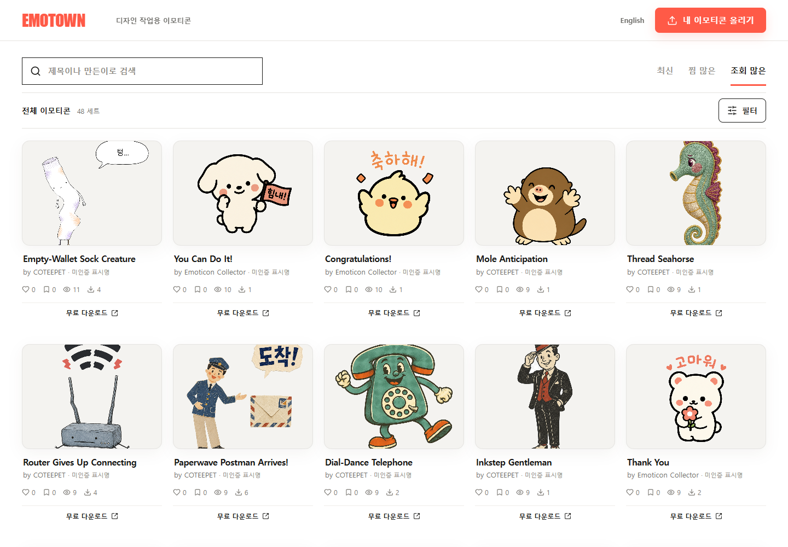
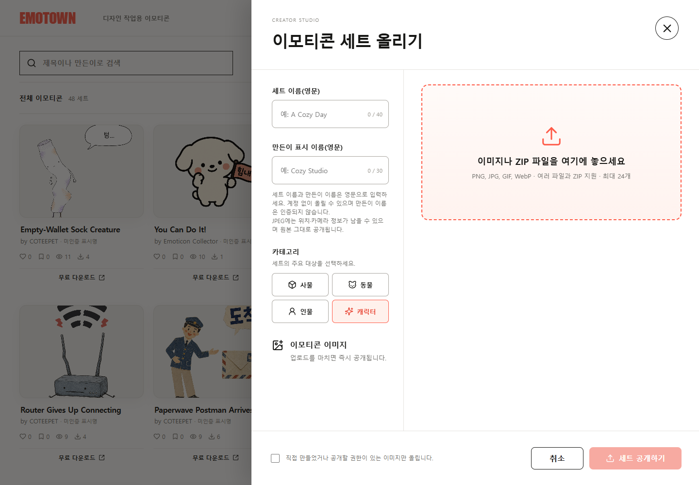

디자인 작업에 사용할 이모티콘 세트를 검색하고 내려받는 웹 갤러리입니다. 카테고리·찜·조회 기준으로 탐색하고 Creator Studio에서 새 세트를 등록할 수 있습니다.
EMOTOWN
개요
해결할 문제
이모티콘이 개별 이미지로 흩어져 있으면 원하는 표정과 세트를 찾고 공유하기 어렵습니다. 탐색·다운로드와 제작자의 세트 등록을 같은 서비스에 담았습니다.
구현 과정
사용자는 세트를 찾고 내려받으며, 제작자는 이미지와 정보를 입력해 등록하도록 구성했습니다.
- 제목·만든이 검색과 카테고리 필터로 세트 탐색
- 최신·찜 많은·조회 많은 순으로 정렬
- 세트별 좋아요·찜과 무료 다운로드 제공
- Creator Studio에서 영문 세트명·표시명·카테고리와 이미지 또는 ZIP 등록
화면·동작

